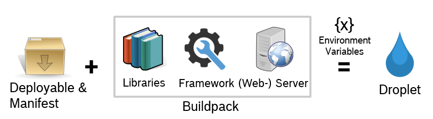

<!doctype html>
<html>
	<head>
		<meta charset="utf-8">
		<meta name="viewport" content="width=device-width, initial-scale=1.0, maximum-scale=1.0, user-scalable=no">

		<title>Cloud Foundry</title>

		<link rel="stylesheet" href="css/reveal.css">
		<link rel="stylesheet" href="css/theme/white.css">

		<!-- Theme used for syntax highlighting of code -->
		<link rel="stylesheet" href="lib/css/zenburn.css">

		<!-- Printing and PDF exports -->
		<script>
			var link = document.createElement( 'link' );
			link.rel = 'stylesheet';
			link.type = 'text/css';
			link.href = window.location.search.match( /print-pdf/gi ) ? 'css/print/pdf.css' : 'css/print/paper.css';
			document.getElementsByTagName( 'head' )[0].appendChild( link );
		</script>
	</head>
	<body>
		<div class="reveal">
			<div class="slides">
				<section data-markdown>
					<script type="text/template">
					<h1>Cloud Foundry</h1>
					
					
					
					Philipp Grimm
					</script>
				</section>
				<section data-markdown>
					<script type="text/template">
					<h2 style="color: #2a76dd; text-decoration: underline;"> Agenda</h2>
					
					- BOSH Summary
					   - Stemcells
					- Cloud Foundry Overview
						- Application Runtime Service
						- Buildpacks
						- Routing
						- Service Integration
					</script>
				</section>
				<section data-markdown>
					<script type="text/template">
					## BOSH Summary
					
					</script>
				</section>
				<section data-markdown>
					<script type="text/template">
					## What is Cloud Foundry?
					
					- Open Source Platform as a Service
					- application runtime service
						- scalable, supports [12-factor-app](https://12factor.net/)-lifecycle
					- supports multiple IaaS stacks
					</script>
				</section>
				<section data-markdown>
					<script type="text/template">
					## Managed Hosting Stack
					
					
					</script>
				</section>
				<section data-markdown>
					<script type="text/template">
					## Cloud Foundry Setup
					
					
				</script>
				</section>
				<section data-markdown>
					<script type="text/template">
					## Orgs and Spaces
					
					- Organizations are intended for projects / teams
					- Spaces are intended for staging
						- Spaces are isolated
						- Applications are within the scope of one certain space
						- Service Instances are within the scope of one certain space
				</script>
				<section data-markdown>
					<script type="text/template">
					## Application Runtime Service
					
					- 12-factor-app
					
					...
				</script>
				</section>
				<section data-markdown>
					<script type="text/template">
					## Buildpacks
					
					- Buildpacks provide framework and runtime support for apps.
					- Maintained and supported Buildpacks
						- Java, Ruby, Node.js, Binary, Go, Php, Phyton, staticfile, DotNet-core
					
					</script>	
				</section>
				<section data-markdown>
					<script type="text/template">
					## Buildpacks
					
					
					
					</script>
				</section>
				<section data-markdown>
					<script type="text/template">
					## Staging of Applications
					
					
					</script>
				</section>
				<section data-markdown>
					<script type="text/template">
					## Blue-Green-Deployment
					
					</script>
				</section>
				<section data-markdown>
					<script type="text/template">
					## Routing
					
					- http(s) and tcp routing to applications
					
					
					</script>
				</section>	
				<section data-markdown>
					<script type="text/template">
					## Service Integration
					
					- Offerings on Cloud Foundry Marcetplace
					- Automated provisioning due to Service Broker 
					
					
					</script>
				</section>
				<section data-markdown>
					<script type="text/template">
					## Thank you for your attention!
					
					</script>
				</section>
			</div>
		</div>

		<script src="lib/js/head.min.js"></script>
		<script src="js/reveal.js"></script>

		<script>
			// More info https://github.com/hakimel/reveal.js#configuration
			Reveal.initialize({
				history: true,

				// More info https://github.com/hakimel/reveal.js#dependencies
				dependencies: [
					{ src: 'plugin/markdown/marked.js' },
					{ src: 'plugin/markdown/markdown.js' },
					{ src: 'plugin/notes/notes.js', async: true },
					{ src: 'plugin/highlight/highlight.js', async: true, callback: function() { hljs.initHighlightingOnLoad(); } }
				]
			});
		</script>
	</body>
</html>
